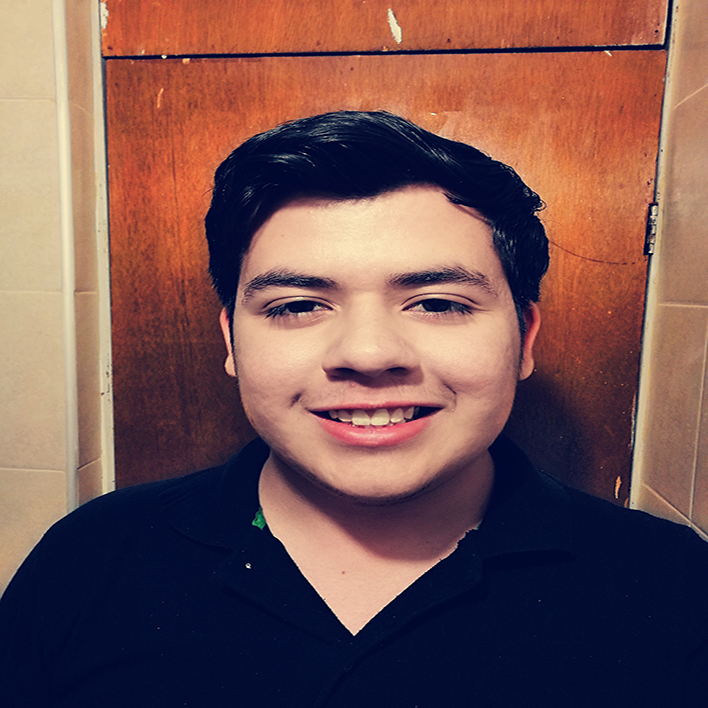

Mi nombre es Kevin Ruiz, soy un joven de 20 años de edad, originario de la ciudad de Chihuahua.
Actualmente estoy estudiando la carrera de ingeniería en sistemas computacionales, me apasiona
todas las ramas de la voz: locución, doblaje, conducción, entre otras.
Trabajo desde los 17 años en una empresa de sistemas en la que desarrollo el puesto de Desarrollador Jr.
Soy fanatico de los Dallas Cowboys desde los 7 años aproximadamente, mi heroe favorito es Batman, de niño
siempre me encontrabas disfrazado sin importar la hora.
Mi número favorito es el 17, ya que es el día que nací y sí... para quién le interesa los signos zodiacales,
soy leo.
Llevo un tiempo en el que me he ido poco a poco metiendo a lo que es la locución y el doblaje, mis metas a
corto plazo es terminar la carrera en sistemas, para luego dedicar más tiempo a mi pasión que es la voz,
quiero comprar un Mazda rojo como auto, ya sé manejar standar, así que ya es un paso menos.
Tengo una familia increíble, por fin tengo un hermano menor a quien solo le llevo 15 años de diferencia jeje,
pero me hace muy feliz con sus ocurrencias.
Mi grupo de música favorito es Imagine Dragons y mi canción favorita es Demons, mi color favorito es el azul
marino y el rojo, me encanta/ba la coca cola pero llevo casi un mes sin tomarla.
Espero que te haya sido interesado leer un poco sobre mí, sigue navegando en la página, te divertirás.